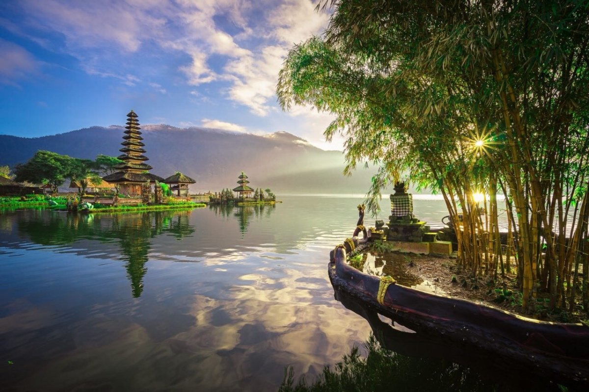
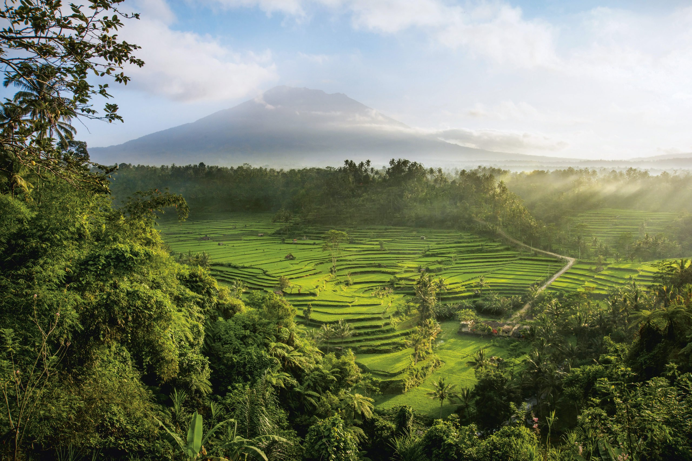

Путешествие
по
Индонезии
Индонезия


Индонезия — страна контрастов; место, где можно встретить бетонные
джунгли больших современных городов и глухие деревушки первобытных племён, непроходимые
тропические леса и комфортные пляжи с роскошными отелями. Представляет из себя одно из самых
густонаселенных государств мира. Находится в Юго-Восточной Азии по обе стороны от экватора.
Обычно Индонезию называют "Страной тысячи островов", желая подчеркнуть, что это крупнейшее в
мире островное государство. Главные туристические козыри страны — самобытная культура,
девственная природа, уникальные флора и фауна, а также безграничные возможности для занятий
водными видами спорта практически в любое время года.
Культура Индонезии из-за многонационального характера населения
страны
отличается высокой степенью этнокультурного многообразия. Важнейшими факторами развития
местной
материальной и духовной культуры было поочерёдное воздействие нескольких религий — буддизма,
индуизма, ислама, а также разнообразных форм язычества — исповедовавшихся в различные
периоды
местными жителями, и существенное внешнее влияние, в частности, индийское, китайское,
арабское и
европейское. Соответствующее многообразное наследие в той или иной мере прослеживается
практически во всех формах национального искусства.
Достопримечательности